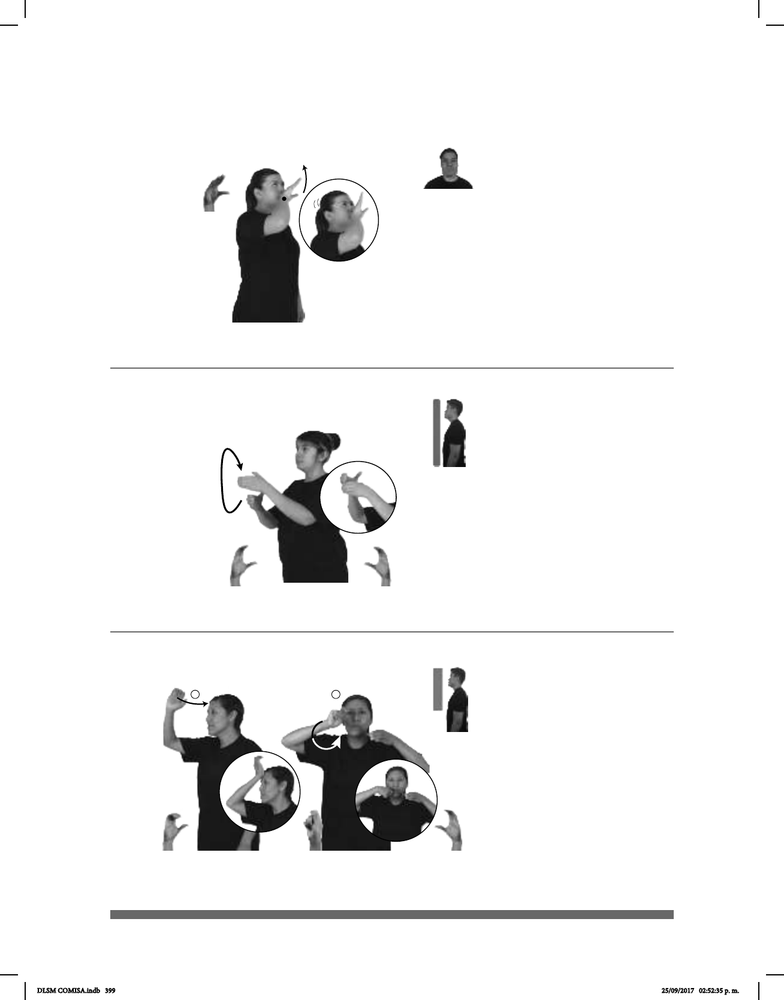

399
(C-10)
Seña: SM
C.4
Palma inicia hacia fuera.
A la altura de la boca.
La mano se mueve de
muñeca.
Ojos se
semicierran.
v. intr. Emitir un quejido
prolongado y agudo como el perro, el
coyote, el lobo u otros animales.
TODA-NOCHE LOBO
allá
AULLAR
El lobo aulla toda la noche.
Seña: SB
MD y MB C.1
MD palma hacia la
izquierda, MB palma hacia la
derecha.
MD y MB a la altura
del pecho.
La MD se mueve
formando un arco, de la parte
inferior de la MB a la parte supe-
rior.
sust. f. Techo
aplanado por el exterior que sirve
como último piso de una casa o
(C-11)
CASA AZOTEA
arriba
pro-YO LIMPIAR YA
Yo limpié la azotea de la casa.
1
2
Seña: SC: I. SM; II. SB
I. C.7; II. MD
I. La palma inicia hacia
la izquierda y termina hacia adentro; II.
MD la palma inicia hacia afuera y
termina hacia adentro. MB palma hacia
adentro.
I. A la altura de la cabeza;
II. MD y MB a la altura de la boca.
I. El antebrazo y la
muñeca giran y cambia la orientación
de la mano, pasa de mostrar la palma a
mostrar el dorso; II. MD el antebrazo y
la muñeca giran y cambia la orientación
de la mano, pasa de mostrar la palma a
mostrar el dorso repetidamente.
sust. f. Carne de carnero
o de chivo que generalmente se cuece
dentro de un hoyo en la tierra el cual ha
sido previamente dispuesto y calentado.
(C-12)
BARBACOA pro-YO GUSTAR
A mí me gusta la barbacoa.
DLSM COMISA.indb 399 25/09/2017 02:52:35 p. m.